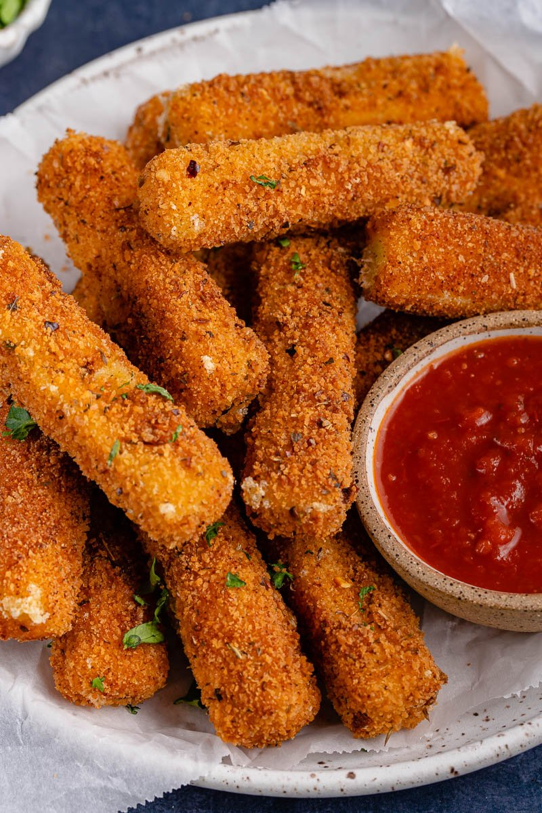

Cheese Sticks

Description
Mozzarella sticks are very easy to make at home. They're deep-fried until golden and crispy on the outside, with melted gooey cheese on the inside.
Ingredients
- 2 large eggs, beaten
- 1/4 cup of water
- 1 1/2 cups of itaian seasoned bread crumbs
- 1/2 teaspoon of garlic salt
- 2/3 cup of all-purpose flour
- 1/2 cup of cornstarch
- 2 cups of oil for frying
- 1 16 ounce package of mozzarella cheese
Directions
-
Whisk water and eggs together in a small bowl. Mix bread crumbs and garlic salt together in a medium bowl. Blend flour and cornstarch together in a third bowl.
-
Heat oil to 365 degrees F (185 degrees C) in a large, heavy saucepan.
-
Dredge a mozzarella stick in flour; shake off excess. Dip into egg mixture. Lift up so excess egg drips back in the bowl. Press into bread crumbs to coat. Place breaded mozzarella stick on a plate or wire rack. Repeat with remaining mozzarella sticks.
-
Use a spider spoon or a pair of tongs to lower 3 to 4 mozzarella sticks into the hot oil. Fry until golden brown, about 30 seconds. Remove from heat and drain on paper towels. Repeat to fry remaining mozzarella sticks.